出席の確認はOpenLMS の 3 限のコマを用いて行う． 3限の授業時間中に出席登録を完了せよ．
ヒープソートは配列上の要素を作業領域の追加無しに （値の交換のための定数個の領域は必要だがマージソートのように 入力の要素数に比例する領域を必要としない） 理論上の最速値の計算量 $O(n \log n)$ を達成する優れたアルゴリズムである．
ヒープソートを理解するには，
の両方を理解することが必要である． 互いに関係無い内容なので別々に理解すると良い．
探索木のデータ構造ができていれば，insert(a) で要素 a を探索木に追加することができ， x = delete_min() で探索木の最小値の要素を探索木から 削除してその値を変数 x に保存することができる．
探索木のデータ構造ががすでに出来ているならそれを使って p.237 List 16.1 の疑似コードで整列が実現できる．
List 16.1 の疑似コードは，最初のループで値を全部 探索木に挿入し，次のループで値の小さいものから順に 探索木から取り出している．挿入のループも取り出しの ループも要素数が n であれば n 回実行するので， それぞれのループの中の処理
の 1 回あたりの処理を $O(\log n)$ で行うことができるなら 整列全体の処理を $O(n \log n)$ の理論上の最速の計算量で 行える．
探索木を利用すると insert は 木の高さの計算量で実行できる．delete_min も同様で， 最小値を探す手間と削除後の木を平衡木に保つ手間両方を 木の高さの計算量で実行できる．
このことから木の高さを $O(\log n)$ に抑えることが重要であることがわかる． 単純な二分探索木では，例えば要素が全部左の子へ追加されてゆくと 木の高さが $O(n)$ となり，$O(\log n)$ の計算量が保証されない．
AVL 木や B 木などの高さの上限を $O(\log n)$ 抑えることが保証できる 探索木を使えば List 16.1 の疑似コードを用いて整列全体の計算量が $O(n \log n)$ の最速整列アルゴリズムを実装することができる．
整列アルゴリズムの部品としてAVL 木や B 木を利用するのは， 計算量の上では効率が良いが，実際には問題がある． AVL 木や B 木は探索を高速に行えるデータ構造として 工夫して設計されているため，プログラムが複雑で， 必要な記憶領域や処理が多い．つまり，計算量のオーダーは $O(n \log n)$ で最速であるが，定数係数が大きく，実際に 動作させると多くの記憶領域を必要とし，動作も遅くなりがち である．
探索木を整列目的にしか使わないなら探索処理は必要無く， List 16.1 の insert と delete_min だけを効率よく できれば良い．
優先順位付き待ち行列という抽象データ型が insert と delete_min を効率良く行えるちょうど良い （複雑すぎない）抽象データ型である．
優先順位付き待ち行列は名前は複雑だが，すべての要素間に 優先順位がある，というだけのことである．すべての要素に 大小関係が定義されているというこれまでの比較を基にした整列 と同じことであり，優先順位が最高のものから順に取り出せば整列になる．
結局 insert と delete_min を高速に行うことができ， それ以外の制限が極力緩いデータ構造を利用するのが 望ましい．
このような要求を満たすには半順序木という木が適している．
ここでは二分木に限って説明する．広義の半順序木とは全ての辺について 以下の性質をもつ二分木である．（教科書では全ての節について， とあるが辺を中心に考えるほうがわかりやすい）
値の条件
この性質が広義の半順序木の全てであり，この条件を維持すること， 利用することを考えるのがアルゴリズムの理解のポイントである．
ヒープソートに用いる半順序木は上記条件に加え， 計算量の低減の目的から，要素数に対してできるだけ木の高さを抑えたいために 木の形に対して以下の条件を満たすものとする．
形の条件
形の条件が与える制限は p. 240 の Fig. 16.1 を見るとわかりやすい． この条件により木の高さが $O(\log n)$ に収まることが保証できる．
また Fig. 16.1 は値の条件も満たしていることがわかる． この教科書では半順序木は 値の条件と形の条件の両方を満たすものとする．
半順序木から最小の要素を見つけるのは簡単である． 値の条件から根が最小になるのは明らかだからである． delete_min の手順について問題となるのは最小の要素を取り除いた後， 残りの要素で半順序木 を再構成する手順である．これは p. 241 の Fig. 16.2 で説明される．まず形の条件を満たすように削除し， 値の条件を満たすように調整する． 根から葉までの一本道の移動の中で処理が終わるので計算量は $O(\log n)$になる．
insert でも要素を加えた結果が半順序木になるように調整する 必要がある．これは p. 243 の Fig. 16.3 で説明されている． ここでもまず形の条件を満たすように挿入し， 値の条件を満たすように調整する． insert は葉から根までの一本道の移動の中で処理が終わるので こちらも計算量は$O(\log n)$になる．
半順序木はヒープと呼ばれる巧妙なデータ構造で， 配列だけで実装できる．
半順序木の実現方法としてすぐに思いつくのは 木構造のデータ構造であろう． 前節の delete_min と insert のアルゴリズムでは． 木のある節から親や子の節の値を参照したり， 親や子の節へ移動する操作が多い．これをポインタを用いた木構造 のデータ構造で効率良く実現するには各節に値を格納する場所の他に 親へのポインタ，2 個の子へのポインタのデータを格納する場所が 必要になるため使用領域の効率が良くない．
半順序木は前節で説明した形の条件のおかげで配列だけを使ってコンパクトに 実現することができる．親や子を指すポインタが必要ない巧妙な実現方法だが， 仕組みを理解するのは簡単である．
理解のポイントは木の図の表現と配列上に実装した表現 （計算機内ではこちらの表現のデータのみをもつ）の各節の対応である． 対応規則は単純で，木の図表現で根の要素をレベル 0 とし， 根から l 個の辺をたどって到達できる要素をレベル l とすると以下の 規則ですべての節に 1 番から順に番号を割り振る．
要するに左から順に番号を振り右端まで来たら下の段に移る， ということを根から繰り返せばよい．（p.245 Fig.16.4） 木の形が形の条件により決まっているので どんな半順序木であっても同じ番号の節は必ず同じ位置になる． 例えば2番の節は必ずレベル1の左端に現れるし，その左の子は必ず4番の節である．
この規則で割り当てた節の番号には以下の有用な規則が成り立つ．
上記のことを Fig. 16.4 で確かめよ．
常に上記の規則を満たすことを直感的に説明する． まず，i 番が左の子であるときに i の親の番号が i / 2 であることを示す．
図13.1 は最後の子（i番）が左の子の場合の図である．
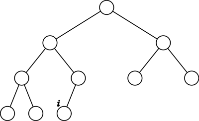
図13.1
まず根の要素を i 番の右隣に移す．この時点では節の総数は元と同じである．
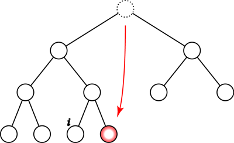
図13.2
空いた根の場所に下のレベルの節 2 個を 1 個に合併して移動する． この操作で移動した節の数は 2 個から 1 個，つまり半分になる．
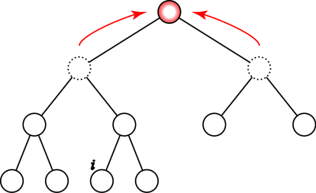
図13.3
この操作を下のレベルへ順に繰り返す．各レベルでの移動で節の数が半分になる．
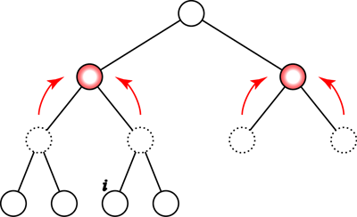
図13.4
最後のレベルの節の数は偶数なので最後のレベルの節の数も正確に半分になる．
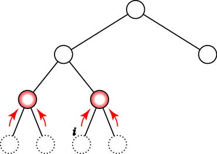
図13.5
結果的に全部の節の数が半分になるので最終の番号は i / 2 となる． これが i の親の番号である．
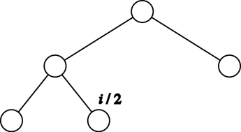
図13.6
左の子 i の親が i / 2 であることがわかれば他の関係もすぐに求めることができる．
この規則のおかげで親は子を指すポインタ領域が不要になる． 自分の節番号から簡単な計算で親，左の子，右の子の 節番号を求めることができるためである．配列で実現されているため， 節の番号さえ分かればアクセスできる．
半順序木をこのように配列で表現したものをヒープという． p. 246 Fig. 16.5 を見て木の図表現と配列上に実装した表現の対応 を確認せよ．プログラムでは(b)の配列上の実装だけをデータとして持つ． これだけで(a)の図表現に沿ったアルゴリズムが記述できる．
節の番号は 1 から始まるほうが親や子の番号を求める式が簡単なため， ここでは配列を添字 1 から使う．配列の添字 0 は使用しない． P.247 List 16.2 は delete_min に必要なプログラムである． 16.1.3 節の説明の通りにコーディングされている．
この実装で注意したいのは delete_min の作業のうち， 46 行めで根の値を最後にreturn で返すために変数 val にコピーし，最後の番号の節の要素を根にコピーした 後の処理，つまりp.241 Fig16.2の (b)以降の処理を downheap という別の関数にまとめられていることである． この関数 downheap 部分だけの機能は，
という条件を満たしているときに木全体 を半順序木にする手続きである．このdownheap と同様な 手続きを後でも使うため重要な手続きである．
P.249 List 16.3 は insert に必要なプログラムである． これも 16.1.3 節の説明の通りにコーディングされている．
List 16.1 と作成した insert, delete_min を使えば $O(n \log n)$ の最速整列が作成できる．しかし，入力の要素数 n と同じだけのヒープのための領域が必要になる．
ヒープは配列で実現できるのだから， 元々整列対象の要素が配列で与えられるならその配列を使ってヒープを 実現できれば効率が良い． ヒープソートはそれを巧妙に実現した整列アルゴリズムである．
ヒープソートは以下の 2 つの部分からなる．
説明の簡単な 2. から先に説明する． つまり，何らかの方法で配列 a[1] から a[n] がすでにヒープになっている とする．「ヒープになっている」というのは配列の要素が P.246 の Fig. 16.5 (b) のように，配列をヒープの対応に従って 木の形に並べたものを考えた時にすべての辺についてヒープの値の条件を 満たしているということである． 実際のプログラム内ではこの配列形式のデータのみを扱う．
2. の処理はヒープから最小値を繰り返し取り出す処理で， 元々の List16.1 のアイデアと同じである．ただ，delete_min で配列 a の最小値を 1 個取り出すとちょうど配列 a の最後の要素が 1 個空くのでそこを保管場所として使う．具体的には Fig. 16.6 のように配列の要素が a[1]から a[n] の n 個のときは delete_min によって最小値を取り出して残りの n-1 をヒープにする． ここで delete_min の手順は p.241 Fig. 16.2 のとおり
であることを思い出す．a[1] と a[n] を入れ替えてヒープの大きさを 1 減らすことでちょうど 1. と 2. が行えることがわかる．
ここでのdownheap はp.248でのdownheapとは少し変える必要が ある．常に a[1] から a[n-1] をヒープにするのではなく， a[1] から a[n-2], a[1] から a[n-3] と，ヒープソートが進むにつててヒープの最後の番号が小さくなるためである． また，後でヒープの先頭も自由に選ぶ必要がでるので p.254 List 16.4 のdownheapはヒープの開始位置(from)と終了位置(to)を指定できるように なっている．しかしdownheap の機能は同じで，
という条件を満たしているときに a[from] から a[to] までの木全体をヒープ（半順序木）にする手続きである．
これを Fig 16.6 のように繰り返せば最終的には配列が右に最小値， 左に最大値が入る降順に整列された形になる．
以下，図13.7 から，この作業を図示する．灰色の要素が ヒープ内として扱われ，白色の要素はヒープ外として扱われる．
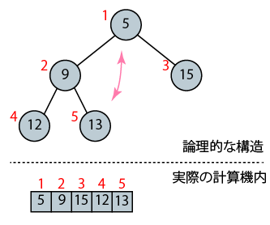
図13.7
まず図 13.7 の状態から図 13.9 までが delete_min の 処理にあたる（p.254 List16.4 には delete_min は関数としては作られていない．58行から61行の処理が delete_min にあたる）．まず桃色の矢印の交換を行い， ヒープの大きさを一つ減らし，図 13.8 の状態になる．
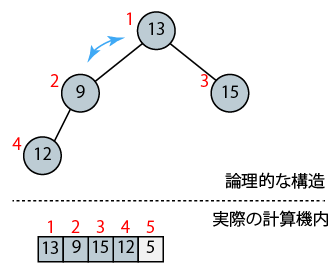
図13.8
図 13.8 の節 1 の左右の部分木がヒープになった状態になっているので 節 1 から節 4 の範囲を対象にdownheap を行うことができる．図13.8 の状態から downheap を 1 回呼び出すと水色の矢印の交換を繰り返し， 図13.9 を経て図13.10の状態になる．
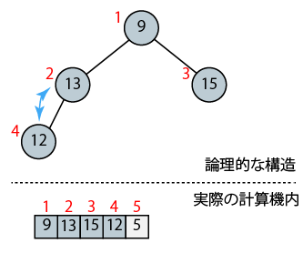
図13.9
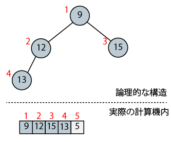
図13.10
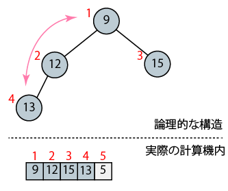
図13.11
次の delete_min 処理に移る．図 13.11 の桃色の矢印の交換を行い， ヒープの大きさを一つ減らして図 13.12 の状態になる．
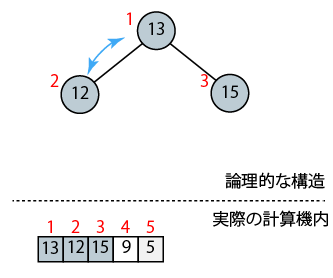
図13.12
図13.12の節 1 の左右の部分木はヒープであるはずだから 節 1 から節3の範囲を対象にdownheap を行うことができる．図13.12 の状態から downheap を 1 回呼び出すと水色の矢印の交換を行い， 13.13の状態になる．
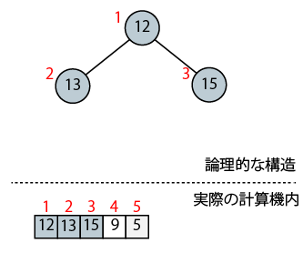
図13.13
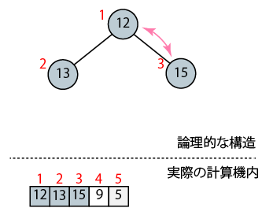
図13.14
次の delete_min に移る．図 13.14 の桃色の矢印の交換を行い， ヒープの大きさを一つ減らし図 13.15 の状態になる．
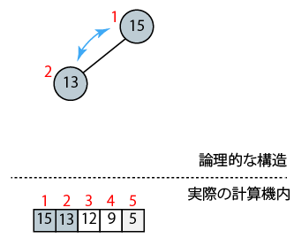
図13.15
図 13.15 の節 1 から節 2 を対象にdownheap を行って水色の矢印の交換を行い， 図13.16の状態になる．
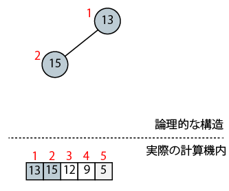
図13.16
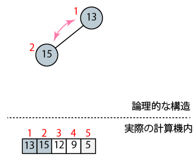
図13.17
次の delete_min に移る． 図 13.17 の桃色の矢印の交換を行い， ヒープの大きさを一つ減らし図 13.18 の状態になる．
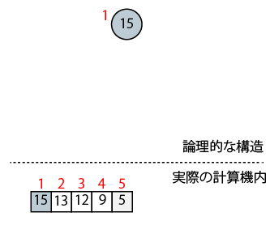
図13.18
一連の操作により，配列が降順に整列されることが分る．
これで最初にヒープが与えられた状態にできればそこから整列を行う ことができることがわかった． 整列アルゴリズムを完成するのに残る問題は 最初に入力された（でたらめな）配列をヒープにする手続きである． 以下で図による説明を行う． ポイントは downheap は始点の節の左右の部分木が 半順序木である場合に使う ということである．
p.253 Fig16.7 で示すように，ある節 c の左右の子を根とする部分木が すでに半順序木になっている場合に c に対して downheap を行うと c を根とする木全体が半順序木になることが保証される．
整列前の初期状態が図13.19 の配列であるとする．これをそのままヒープ木の形 に当てはめたものが上半分の木である．半順序木の形の条件は満たしているが 値の条件については処理前なので満たしている保証が全くない．
この木について downheap を適用する場合，根から適用するのは間違いである． この段階では左右の部分木（節2を根とする左部分木と節3を根とする右部分木） は初期状態のままで半順序木になっている保証が無いためである．
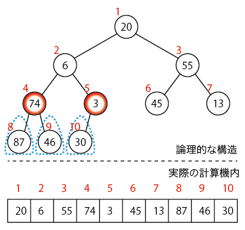
図13.19
図13.19 の初期状態でも半順序木になっている部分木がある． 要素が1個だけの木は必ず半順序木であるから，節 6,7,8,9,10 を根とする 部分木は何もしなくても半順序木である．ここで例えば節 4 を中心に考えると 左右の部分木が半順序木という downheap を使う前提条件を満たしている ことがわかる．このため節 4 に対して downheap を行うと 節 4 を根とする部分木全体が半順序木になることが保証できる．同様に 節 5 に対して downheap を行うとレベル2（節4,5,6,7)を根とする部分木すべて が半順序木になる（図13.19から図13.20）
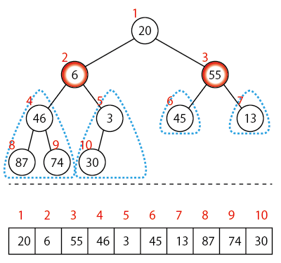
図13.20
結局根から遠い節から順に根に向かって downheap を行えばよいことがわかる． どの節から始めればよいかを考える．
最も番号の大きい節の番号を n とすると，n の親 n / 2 （切り捨て）が 子を持つ節点のうち最大の番号を持つものである．n / 2 よりも番号の大きな 節は子を持たないため自分を根とする部分木の要素数は 1 個である． 既に半順序木になっているため何も処理を行う必要はない． 結局，子を持つ節のうち最大のものである節 n / 2 から 番号を戻る順序で節 1 までを対象に downheap を行えば良い． 以下図13.22まで処理を行えば完了で，木全体が正しくヒープになっている ことがわかる．
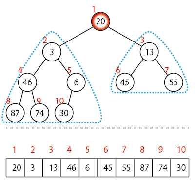
図13.21
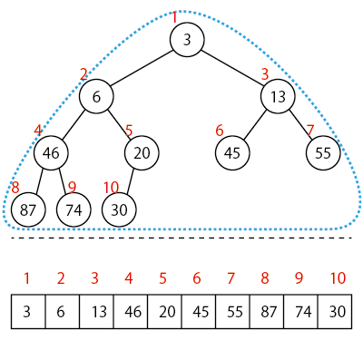
図14.16
p.254 List16.4 にこれまでの練習問題を参考に必要な記述を加えて 動作させよ．
これまでの整列プログラムと異なるのは
という点である． このため，print_array のループも i = 1; i <= n; i++ に変更する必要がある．main 内でテスト用の数値を 設定するときは要素数を n に設定し， a[1] から a[n] に値を設定する．具体的には，print_array と main を以下のようにすればよい．（プログラム先頭への #include <stdio.h> の挿入も必要である．）
void print_array(int a[], int n)
{
int i;
for (i = 1; i <= n ; i++){
printf("%2d ", a[i]);
}
printf("\n");
}
int main(void)
{
a[1]=20;
a[2]=6;
a[3]=55;
a[4]=74;
a[5]=3;
a[6]=45;
a[7]=13;
a[8]=87;
a[9]=46;
a[10]=30;
n = 10;
print_array(a, n);
heapsort();
print_array(a, n);
}
図13.23 List16.4 の後部分
ヒープソートの計算量は，前半の要素をヒープにする部分が $O(n)$， 後半の delete_min を繰り返す部分が $O(n \log n)$ になるので全体では $O(n \log n)$ となる．クイックソートと違い，最悪時でも $O(n \log n)$ で実行できることが保証される．また，クイックソートと 同様に安定なソートではない．
第 13 回課題「偶数要素のカウント」 を提出せよ．